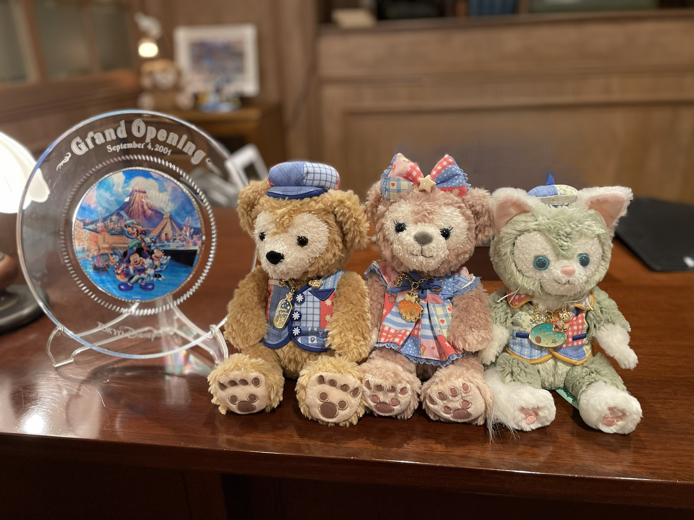

画像についてひとこと：ディズニーが好きで、 幼少期からディズニーの映画やドラマを見て育ちました！ ダッフィーフレンズのなかではジェラトーニが一番好きです！
はじめまして！クロです ！(●'◡'●)
文系ですが、IT系の就職を目指しています!
3年後期から交換留学なので早めに就活したいと思い、今回応募しました！
まだまだプログラミング初心者ですが、よろしくお願いします🙇♀️
強み：チャレンジ精神、主体性
弱み：早起き、優柔不断
TECH-BASEでは、PHPを使ったWebアプリ開発にチャレンジします。 プログラミングはまだ勉強中ですが、フロントエンドだけでなく、データの処理などWebの仕組み全体を理解できるようになりたいと思っています。 分からないことにぶつかりながらも、調べたり質問したりしながら、一歩ずつ成長していきたいです。この経験を通して、エンジニアとしての基礎的なスキルを身につけたいです！
この期間を通して自分でwebアプリを開発できるという自信と確かなスキルをつけたいです！